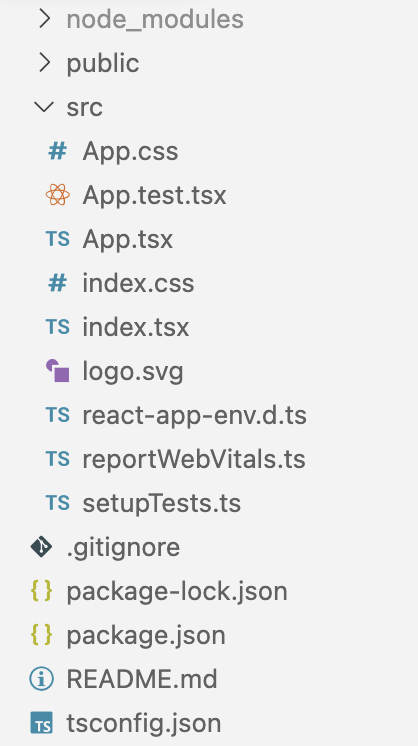

$ npx create-react-app your-app-name
--template typescript
--use-npm

const header = Hello World
;
const header = React.createElement(
'h1', {}, 'Hello World'
);
Babel transpiles exactly like this.
You can use any JS expression within curly braces.
const name = 'John Wayne';
const header = Hello, {name}
;
const math = 2 + 2 equals {2 + 2}
;
const formatted = Hello, {formatName(name)}
;
JSX is an expression too.
function getGreeting(user) {
if (user) {
return Hello, {formatName(name)}
;
}
return Hello, stranger
;
}
JSX uses camelCase for most DOM element properties, e.g. stroke-width becomes strokeWidth
We will be using TypeScript because we highly recommend using it in enterprise projects.
With Create React App Typescript is supported out of the box:
--template typescript
npm start
Starts the app with a live reload server. The build will fail if you have TypeScript errors.
npm run build
Creates a production ready build of your app and puts it in the build folder.
npm test
Runs your tests using jest and react-testing-library
npm run eject
You may have noticed that there is no webpack config visible. This is hidden from you when using Create React App (convention over configuration).
In most cases, this will be fine. If you need to make custom changes to the config, you can eject.
This cannot be undone and you lose Create React App support.
Enforce some code styles which pertain more to usage.
Create React App comes with some predefined rules.
ESLint has a ton of (predefined) rules, ranging from very loose to super strict (airbnb).
Run npm i -D eslint to install it.
Run npx eslint --init to setup a configuration file:
"scripts": {
"lint": "eslint \"src/**/*.{js,ts,tsx}\" --quiet",
},
And again add the plugin for your IDE: VS Code